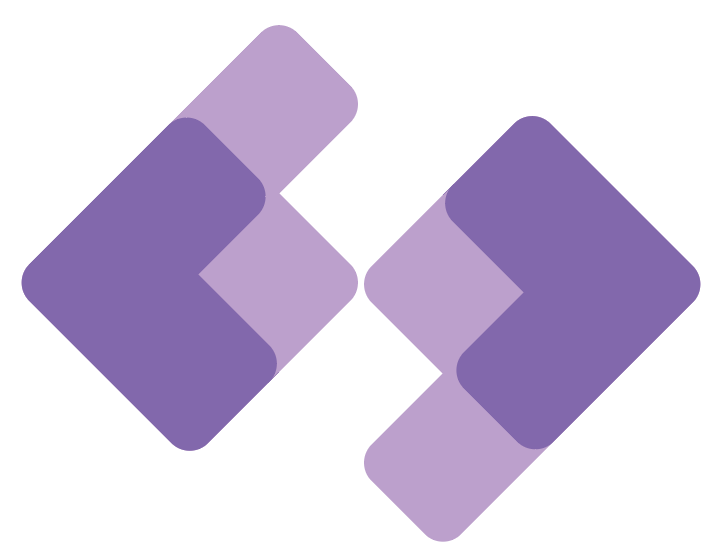

Макет сайта «Черным по белому»
Цель проекта: разработать макет для сайта театра колледжа КГБ ПОУ ХКОТСО
Дизайн: минималистичный, современный
Дизайн: минималистичный, современный
Технологическая карта
| № | Операция | Ход выполнения | Результат |
|---|---|---|---|
| 1 | Создание документа и изображения | Создаем документ размером 297 мм на 210 мм пикселей. Затем пользуясь инструментами Rectangle Tool, Ellipse Tool и Shape Builder Tool создаем изображение. Ставим следующие цвета – светло-фиолетовый (C - 57,81, M - 64,06, Y – 0, K - 0), темно-фиолетовый (C - 29,69, M - 41,41, Y – 0, K - 0). Группируем все части изображения. |  |
| 2 | Добавление текста | Добавляем простой, но подходящий текст. Размер шрифта – 150 пт, цвет - светло-фиолетовый (C - 57,81, M - 64,06, Y – 0, K - 0), шрифт – Calibri Regular |  |